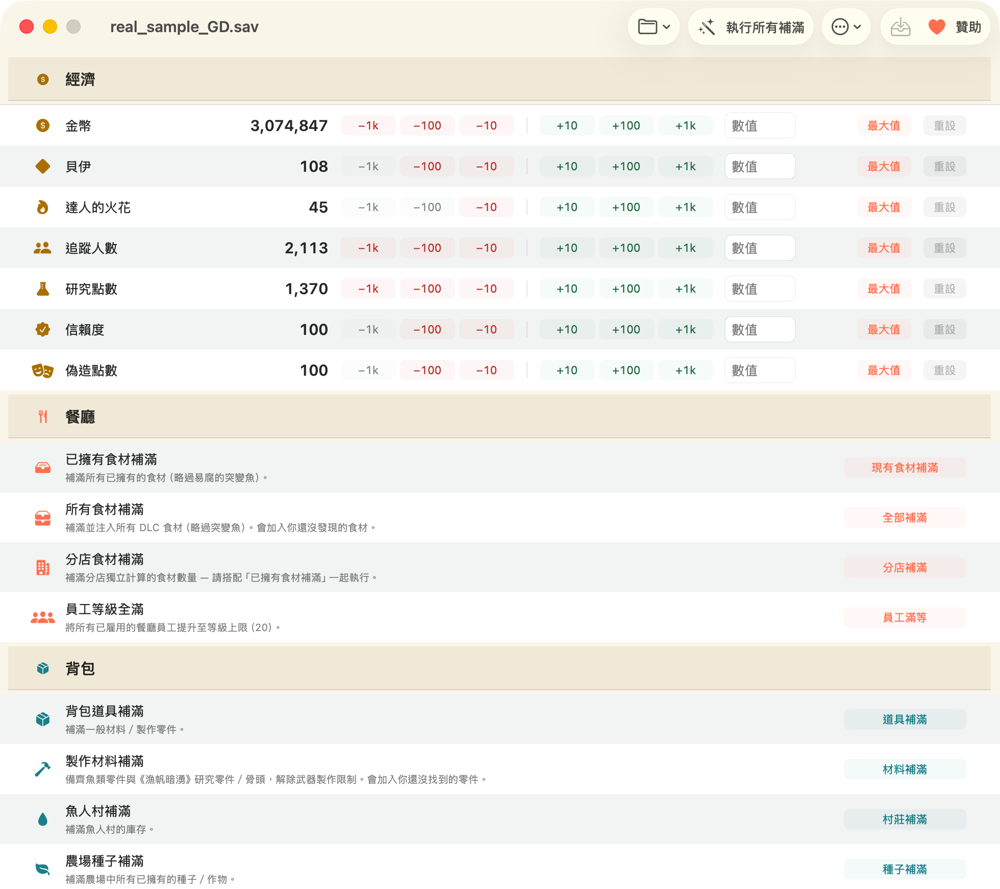

Mac 版《潛水員戴夫》存檔修改器
DiveSaveEd 是免費、開放原始碼的原生 macOS 軟體，在遊戲關閉時離線修改你的 潛水員戴夫（Dave the Diver）存檔。不需要 Wine、不用 Cheat Engine、不注入遊戲程序、 不需要帳號、不連網路。
免費，MIT 授權 macOS 14 以上 Apple Silicon + Intel 已簽署與公證 四種語言
下載 .dmg，把程式拖進「應用程式」資料夾即可。本程式已經過 Apple 簽署與公證。


這個程式做什麼
《潛水員戴夫》會把遊戲進度存在 Mac 上的一個存檔檔案裡。DiveSaveEd 開啟那個檔案、解碼、 讓你修改在意的數值，再寫回去、關閉。整個工具就只做這件事。它不會附加到遊戲程序，不會讀寫遊戲 記憶體，也不會動到遊戲執行檔 — 這也是為什麼它完全不需要遊戲執行中，而且在遊戲執行中時會拒絕 寫入。
這款遊戲的其他存檔修改器幾乎清一色只支援 Windows，在 Mac 上就代表要靠 Wine、CrossOver 或 虛擬機。這一款是真正的 Mac 軟體。
功能
-
貨幣
金幣、貝、匠人之火、研究點數、Cooksta 追蹤者數、信任點數與偽造點數。可以 ±10／100／1000 增減、直接輸入指定數值，或設為最大值。「重設」會把數值還原成你開啟存檔時的狀態。
-
批次補滿
每一項各按一下 — 已擁有食材、所有食材（自動判斷 DLC）、二號店分店庫存、員工等級、一般 物品、製作材料、鮫人村、農場種子、已捕魚類等級 — 或用一鍵全滿一次搞定。
-
依名稱搜尋，不必找 ID
程式內建物品資料庫，你可以直接用真正的物品名稱瀏覽與修改任何單一物品，不必翻試算表去猜 數字 ID。
-
所有操作都能回復
每個批次操作都可以在程式內回復，每次寫入前都會先建立帶時間戳記的備份，並提供還原視窗讓你 回到其中任何一份。
-
唯讀的原始存檔檢視器
以格式化 JSON 搜尋整份解碼後的存檔。這裡刻意設計成唯讀：手動修改原始數值可能讓進度旗標的 順序錯亂，導致該周目卡死無法繼續。
-
多重存檔欄位
自動抓出遊戲的每一份存檔，讓你自由選擇要修改哪一份 — 而且不必告訴它存檔放在哪裡。
-
四種語言
English、简体中文、繁體中文、한국어。含有非 ASCII 文字的存檔都能正確讀取與寫入，不會出現 亂碼。
-
支援 DLC
「In the Jungle」DLC 的食材都有處理，而且程式只會為存檔中回報為已安裝的 DLC 注入內容。

這樣安全嗎？
安全性是設計時就定下的前提，不是事後才補的：
- 《潛水員戴夫》執行中時拒絕寫入，存檔檔案正被其他程式開啟時也一樣。
- 每次寫入前自動建立帶時間戳記的備份，並提供還原介面。
- 每一項批次操作都可以回復。
- 寫入前會先顯示變更預覽。
- 批次補滿會略過易腐的突變魚（DREDGE 聯名的捕獲物）— 遊戲載入時會丟棄囤積的突變魚，補滿反而會清掉你真正的漁獲。
- 以 MIT 授權開放原始碼。執行之前，歡迎逐行檢視。
至於封鎖帳號：不會。《潛水員戴夫》是單人遊戲，沒有多人連線、沒有排行榜，也沒有任何反作弊 軟體。這個程式的存在，是為了讓你能備份、修復自己的單人存檔，並省下重複刷取的時間。

延伸閱讀
-
macOS 上的存檔位置在哪裡？
兩個已知路徑、如何打開隱藏的
~/Library資料夾、GameSave_XX_GD.sav的命名規則，以及怎麼手動備份。 -
最大化金幣、貝與匠人之火（英文）
實用操作指南 — 每種貨幣的用途、怎麼設定，以及設過頭時怎麼還原。
-
Mac 上的 Cheat Engine 替代方案（英文）
Cheat Engine 不能在 macOS 上執行。這裡老實說明記憶體修改工具與存檔修改器的差別，以及本程式 改用什麼做法。
-
常見問題（英文）
封鎖帳號、修改消失、Intel 版 Mac、非英文存檔、DLC、回復，以及 Xbox／Microsoft Store 版本。
系統需求
| 作業系統 | macOS 14 (Sonoma) 或以上版本 |
|---|---|
| 硬體 | Apple Silicon 或 Intel — 通用版本 |
| 遊戲版本 | macOS 上的 Steam 版《潛水員戴夫》 |
| 不支援 | Nintendo Switch、PlayStation、Xbox／Microsoft Store |
| 價格 | 免費，MIT 授權。無廣告、無遙測、不進行任何網路連線。 |